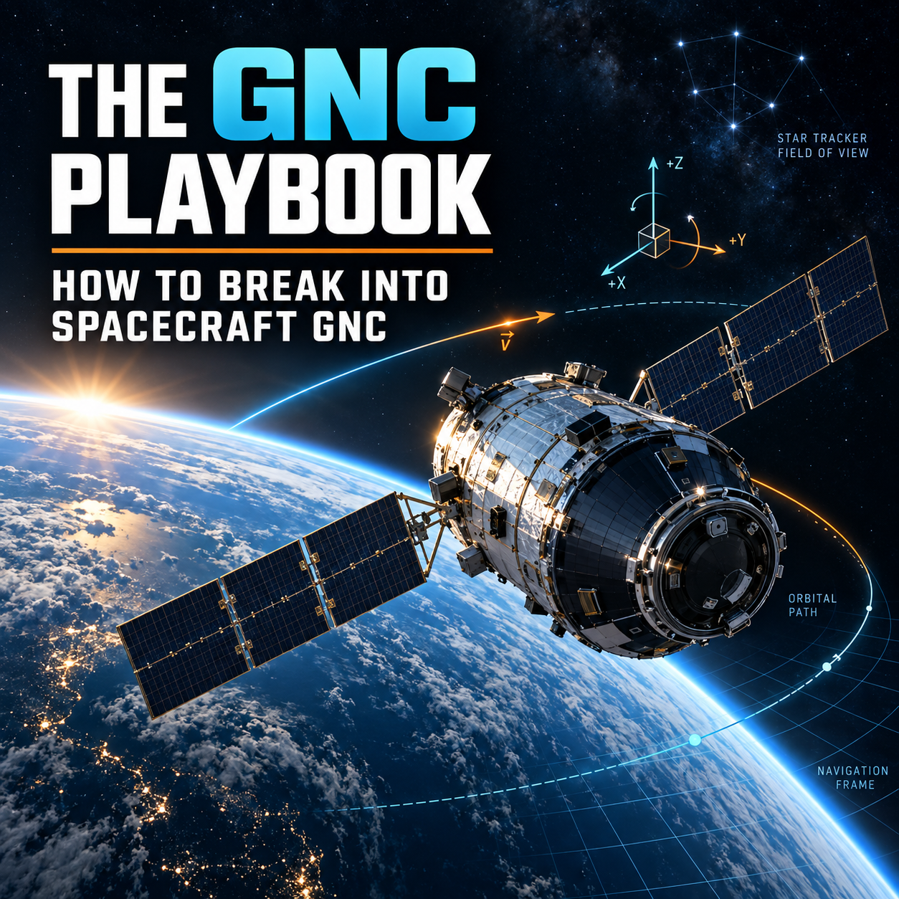
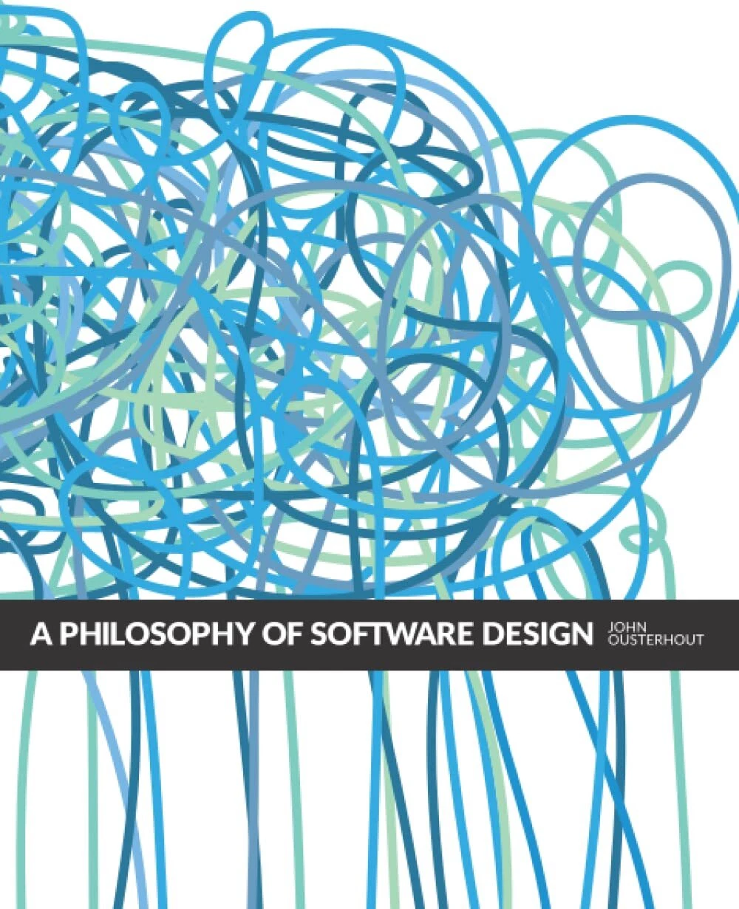
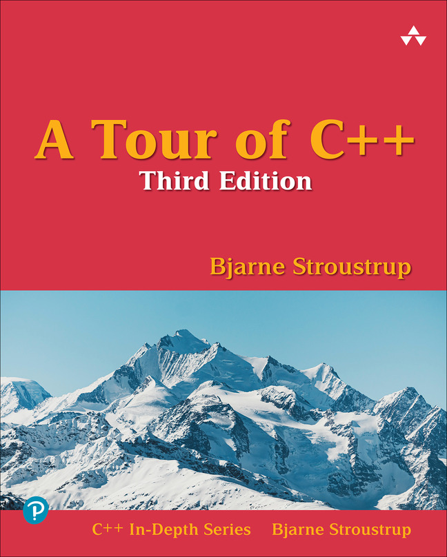

How to land your first job (or dream job) in GNC.
Table of Contents
- Intro
- Disclaimer
- How This Document Will Be Structured
- Acknowledgements
- "Getting a GNC Job is 'Easy' if you know what these companies are looking for"
- The Importance of "Near-Peer Mentors"
- Brian Tracy's "Iron Law"
- What's Important
- "The How"
- Coverletters
- Make a GitHub!
- The Learning Curve / Learning Process
- How To Network – If You Have No Connections, No Access
- How To Network – If You Have Connections
- Embrace Failure – It's Part of The Process
- Name-Brands on Your Resume Can Help… But…
- Different Types of GNC Engineers
- GNC Project Ideas To Stand Out
- Some Skills and Softwares To Learn
- Supplemental Resources For C++ Practice, SWE Principles
- Typical Interview Flow
- GNC Interviews - Example Questions
- Conclusion
Intro
In this document, which is effectively a "short book," I’m going to share insights which I think will help anyone pursuing a career in GNC – primarily what to do if you want to break into GNC as I just did, and also what to do if you’re already early in your GNC career but want to take your skills to another level.
School is often good with teaching theory and fundamentals, but not the mechanics of how the industry works and how to get a job, so hopefully I can give some good insights on that here.
Quick intro on myself – 13 months ago, I was finishing the 4th year of my Astronautical Engineering MS/PhD doing my PhD Research in a plasma physics lab at the University of Southern California, with no traction whatsoever in getting any interviews, anywhere, for the entire first four years of grad school.
As I've mentioned countless times in other articles on this blog -- my PhD lab was a disaster. It was underfunded, we had no money, and no clear research direction since I had to switch topics 3 times in the first 3 years. Seven of the lab's last nine PhD Students have dropped out ("mastered out") due to these issues -- far above the usual PhD attrition rate.
The final topic that I settled on -- Spacecraft Contamination -- didn't contaminate me with ANY job offers, as I found out!
The situation was pretty grim -- I had zero interviews for any type of job or internship anywhere for the first four years of grad school, but in August of 2025, that changed when I was able to land a coveted Spring 2026 Blue Origin (and Honeybee Robotics) GNC Internship offer.
Since landing (and accepting) that internship offer, I’ve interviewed with over 31 different companies for Spacecraft GNC intern or full-time roles ever since, even landing a few full-time offers, and I’ve learned a lot of insights which I think are helpful for anyone else pursuing a similar path.
In hindsight, I wish I’d landed similar opportunities way sooner; hopefully this document will help you avoid some of the mistakes I made when pursuing a GNC career and help you land your desired role.
Disclaimer
This document is just a brief overview, is my perspective (not an official position of USC or any of my employers - past, present, or future), but a lot of this is stuff that I wish I knew 3-4 years ago, and depending on where you’re starting at, it could potentially save years of effort if it helps you land your first job (or your dream) job in GNC.
How This Document Will Be Structured
The overall goal of this document is to help you land your first job (or your dream job) in Spacecraft GNC. It will be part strategy/philosophy, but it will also be very tactical and granular. I encourage you to read both since the mindset/philosphy is just as important as the tactical and technical stuff.
It will also be relatively long and comprehensive since getting good at GNC and overcoming some of the early barriers is complicated and hard (but worth it!).
I’ll start out by giving some mindset and broad strategy which is essential for beginning this journey, then I’ll get progressively more tactical as the document goes on – outlining what types of topics and problem sets to practice and master if you want to be competitive for the roles.
In between, I’ll also talk about what types of projects to focus on – whether you’re in industry right now and want to switch over or level up, or whether you’re in school and want to know how to make the most of the opportunity.
As I’ll allude to below, knowing what to focus on – both in terms of what projects to create, and also in terms of what fundamentals to study up to succeed in interviews – is honestly 90% of the battle, so hopefully this document will do that so that you can execute and succeed!
This is essentially a mini book on GNC
In his January 2025 advice directly to me recorded on his podcast (outlined in this article), Cal Newport challenged me to effectively “write a short book on how to do X”, with “X” being what I decided to pursue, which in this case ended up being GNC (along with content and entrepreneurship, which I’ve also written the equivalent of “a book” on with this blog).
Since GNC (and the broader field of AI/Autonomy) is one of the core things I’m pursuing, and think I’ve cracked the code on, this article is essentially intended to be its own full-length “short book” which is a comprehensive guide on how to break into GNC.
↑ Back to Table of ContentsAcknowledgements
Before I dive into it, I want to acknowledge all of the people who have helped me throughout the years – from all of my professors and fellow PhD Students at USC who gave great advice, to industry veterans who were gracious with offering some of their time and advice to me, and also people outside of the industry such as those from the USC creator and entrepreneurship talks and events I attended. Even their frameworks translated very well to this career search and self-discovery process.
I even want to thank the 27+ companies that interviewed me but didn’t offer me (this time) since even though I didn’t land those GNC jobs, the information and feedback I gathered there was invaluable as well.
All of this advice is the culmination of advice from over 100+ very smart and talented people, and I definitely wouldn’t be where I am today if it weren’t for them and their generosity!
”Getting a GNC Job is ‘Easy’ if you know what these companies are looking for”
In March 2023, as I was in the second year of grad school and finishing my Master’s in Astronautical Engineering at USC, I attended a USC Social Media creator talk given by YouTuber Alan Chikin Chow – the top YouTube shorts creator in the world (even over Mr Beast still!) and a 2019 alumnus of USC.
In Alan’s talk, which I documented in my previous article here, Alan gave advice for being a successful content creator, with the key insight essentially being:
“[Alan also mentioned that he thinks that] creating viral videos on purpose is EASY if you know what the platforms want from their creators.”
For anyone in the engineering world not involved in social media, the example might sound a bit out of left field since GNC is not social media. However, I think the exact same thing applies to engineering career strategy.
If I were to rephrase Alan’s quote in the context of GNC Engineering, the key insight is that:
“Getting a GNC Engineering job is (relatively) easy, if you know what these companies want from prospective GNC Engineers.”
So while I’ve repeated the same thing a couple of different ways now, the key insight is that once you figure out what these companies are looking for in GNC Engineers (and you develop those skills and gain experience in those things), you will be successful.
↑ Back to Table of ContentsThe Importance of “Near-Peer Mentors”
Harkening back to Zack Honarvar’s talk at USC, one of the biggest things that I learned from that talk is that having “near-peer” mentors is one of the best ways to get ahead early in your career.
Zack also called this concept “the myth of old mentors.”
Essentially, Zack’s advice was that learning from people who are experts, or 20, 30 steps ahead of you can be helpful sometimes, but that more often than not, they forget many of the details that helped them to where they are, or the world had changed since they implemented their own advice.
On the other hand, people that are only a little bit ahead of you in their career – “near-peer mentors” – are oftentimes who you can learn the most from since they just both went through what you’re going through and also remember the exact steps to get there from where you currently are.
While getting advice from both is useful, I think that “near-peer mentors” have helped significantly more in my own life and career. Life is complicated, and “the devil is in the details,” so hopefully I can serve as one of those “near-peer mentors” to you here since the details are still fresh for me in a way that is helpful.
Brian Tracy’s “Iron Law”
Brian Tracy has been one of my favorite authors since I first picked up his best-seller “No Excuses!” off the discount rack at Barnes & Noble in Minnesota in Spring 2018.
One of the “laws” that he outlines in most of his books which I just re-read about recently is “the law of cause and effect,” which essentially says that for a given input in life, you’ll get a certain output.
To paraphrase Brian Tracy, what this strategically means for you if you want to break into a GNC career (or any career), is that:
“If you can be clear about what you want, then find other people who were in similar circumstances to you but achieved that thing anyway, and then you do the same things they did over and over again, you will eventually get the same results.”
Brian’s law of cause and effect is a great way of tying Alan and Zack’s principles together, and is worth mentioning even though it’s sort of repeating the same things since it’s so important.
↑ Back to Table of ContentsWhat’s Important
So now that I’ve driven home the point that you must figure out what’s important, and then execute on accomplishing those things, you might wonder: "What is actually important, then?"
This section will answer both that question and my modified version of Alan’s advice, which is “what do companies want from their (prospective) GNC Engineers?”
Concisely laid out, here's what you need to do:
- Master the fundamentals
- Gain relevant experience
- and learn how to sell yourself
That's it. It might sound simple, but the actual execution and details are a little more complicated, which is what these companies care about.
Mastering the fundamentals means learning and mastering the engineering fundamentals (orbital mechanics, controls, guidance, navigation, software, etc.) at a very high level, to the point where you can answer any question about those on a whim during a technical interview or coding test without looking at your notes or any equation sheet.
Without the fundamentals, you won’t pass the vast majority of technical interviews, so it’s very important to do no matter how much experience you might have. Plus, as annoying as it might initially be to learn and master all of these concepts, it’ll make you a much better GNC engineer in the first place compared to just doing a surface level pass of the topics.
Gaining relevant experience is pretty self explanatory – before you get hired for GNC jobs at top space companies or startups, you must do some form of project or experience in order to get your foot in the door in the first place.
Fundamentals are extremely important to passing the technical bar, but if you don’t have experience, then it’ll be very hard to pass the “experience bar” of these companies.
It'll be 100x easier to convince these companies that they should hire you if you've done the thing before, and it'll be very hard to convince them if you haven't.
Lastly, learning how to present and sell yourself is something that is very important as well.
Having the “professional’s mindset” that Steven He outlined in his “the artist vs the professional” concept, which is also the same as Cal Newport’s “Craftman’s Mindset” in his “Craftman’s Mindset vs Passion Mindset” framework, is an important starting point.
Always think of what you can do for the companies, how you can provide value to them, and make sure to phrase it that way when you sell yourself – NOT the other way around (i.e. what they can do for your career – and you’ll do much better off.
This feeds into your resume structure, what you say in coverletters, what to say in interviews, and how to even present things like your LinkedIn and so on and so forth.
↑ Back to Table of Contents”The How”
Now that you understand the high-level of WHAT to work on (with more specifics below), learning HOW to go about executing on that is the next most important thing.
With this guide, I’m saving you the effort of the “what” step – which has taken me years of effort, information gathering, informational interviews, interning in industry, failed interviews, and so on in order to eventually bring all of this together.
Given that, here’s how you succeed in the three most important areas that I’ve overviewed so far:
1) The Fundamentals
- With fundamentals, begin by gathering all the questions that you're studying and their solutions, then rewrite all concepts and equations on a master “equation sheet”, then further break it down by listing out each variable, what it means, and the units, and do that until you understand what each concept, variable, and equation means. Once you’ve done all of this, memorize them with flashcards (optionally in tandem with a whiteboard) until you get everything right. This will all be difficult, but is totally worth it.
- Recalling advice for studying for my PhD technical qualifier: one of my fellow PhD students at USC who everyone greatly admired/respected said that when mastering these concepts, the goal is to “always understand the why” behind everything: understand what each variable in every concept or equation means, what its units are and why, how/why they relate to each other, what each part of the equation means, and what each equation means as a whole. Do not skip ANY of these parts.
- (edit: as I was finishing this article, I came up with a name for this, which is "recursive first-principles" or "recursively understanding the why," where you go as deep and granular as you can, understanding everything piece by piece, then propogate your way back up)
- Once you’ve done that with the fundamentals, and have the fundamental equations, concepts, variables, etc. memorized, you MUST actually do real practice problems under time pressure and without looking at any notes. This is called the “drill, drill, drill” strategy, and is necessary in order to actually get good at applying the knowledge rather than just academically memorizing it.
- In his teachings, Dr. Cal Newport of Deep Work fame would call the flashcard understanding and memorization method I outlined “active recall”, and he would call the “drill, drill, drill” strategy that I outlined above “deliberate practice.” In his view, these are two keystone habits that you must do in order to get good at anything. You can’t just do one or the other, or neither!
2) Projects
The most important thing for landing any job is that hiring managers want to see that you have hands-on experience outside of the classroom related to the job you’re trying to get.
In tandem with rock solid fundamentals, you absolutely need either projects or professional experience in GNC in order to break into GNC.
I haven’t come up with a name for this “rule” yet, but it’s so powerful that it shows up in a lot of places in life.
For example, in order to get into my USC Masters/PhD Research program and earn a full ride, I had to do a lot of research in undergrad and do it at a high enough level where I produced several noteworthy first-author peer-reviewed publications.
Essentially, I had to do some form of research – and produce evidence that I was good – in order to convince my program at USC that I also had enough research potential to in turn excel as a PhD researcher with them (if I were in a decently run lab, at least).
Similar to that, you must produce GNC-related projects or have some other type of GNC-related experience in order to convince hiring managers to hire you for real GNC-related work.
If you’re a student, this is easy – join either a lab or student group that both allows you to do good GNC work and produce evidence that you’ve done a good job with that (whether it’s publishing peer-reviewed GNC papers as a first author, github repositories with a lot of good C++ GNC code, or winning rocket or solar car competitions, etc.).
That way, interviews for both internships and full-time jobs will be much easier, as I outline in my “high stakes vs low stakes” article which I published last month.
If you’re no longer in school, you’re still very much in luck with GNC in particular since it’s something that’s largely done on software, so you can write, validate, and run some pretty serious GNC simulations – all you need is an internet connection and a laptop. Bonus points if you can do some cool GNC-related stuff in the real-world like building a quadcopter, drone, self-driving car, or even model rockets, or some other robotic or physical system where you code the control, navigation, or guidance systems and flight software from scratch.
As a cool example of this is Tom Mueller who was employee number 1 at SpaceX and is now a billionaire engineer and the founder of Impulse Space. Mueller as working at a traditional aerospace company, TRW, in the early 2000s when he caught Elon Musk’s eye.
He’d built an amateur liquid-fueled rocket engine in his garage capable of 13,000 pounds of thrust -- a record at the time -- and was also active in amateur rocketry circles in Southern California outside of his official duties as a TRW rocket engineer.
Because of this obsession and ability to go above and beyond outside the scope of his job, he caught Elon Musk’s eye, was the first hire at SpaceX, and the rest is history.
Most of us might not become Tom Mueller, but the lesson is all the same – spend time on GNC projects, even if it’s personal projects like that, outside of your current job, and there’s a good chance that you’ll eventually get the opportunity you want.
Basically, to convince people you’ll be good at something in the future, the best thing is to do it at a high level in the past and present.
3) Learn to sell
At risk of repeating myself from my previous articles, I’ll simply quote myself from my “How To Land Your Dream Job or Internship” article here:
↑ Back to Table of Contents“I won't go into details about this in this article since it's a very nuanced topic, but I highly recommend not only focusing on the technical aspects in Rules 1–3, but also learning how to sell yourself.
Sort of along the lines of Rule #2 — when you're interviewing or writing tailored cover letters and so on, always state what you can do for the company, what value you can bring, how you help them accomplish their goals.
On top of that, while definitely not always required, I personally think that increasing your charisma and general interview skills is also a good return on investment.
What worked for me was getting good at standup comedy — I outlined how in my article here. Performing in front of live audiences under live time pressure is one of the best ways to become charismatic fast.
In my opinion, if you can get to the point where you can command a stage, be witty, and make people laugh in real-time (and get through the initial stages of being bad your first few sets to get there), you're going to come across much more charismatic in job interviews. Comedy is one of the best training grounds for job interviews and selling yourself.”
Coverletters
I won’t give away my coverletter template here unfortunately (at least not yet), but coverletters can absolutely work well if you sell yourself the right way, especially early in your career.
While you can get away without using them later in your career and get responses as you build the right skills and experience, they can make the difference between getting and not getting a job, and I certainly think that my coverletter template helped me land my Blue Origin internship.
The most important thing is that you “need to speak the company’s (/ recruiter’s / hiring manager’s) language…” – and this is a part of learning how to sell yourself.
Once you understand what they’re looking for, and how you can deliver for them if they hire you, then it actually becomes much easier to tailor coverletters once you come from that perspective.
Make a GitHub!
For the entire four years of my PhD, I shared an office with a fellow PhD student who eventually became a space entrepreneur. He specialized in GNC during his PhD at USC and immediately proceeded to raise money for and start his own space company that he cofounded around the time of his PhD graduation in May 2026.
I don’t like mentioning individuals or company names unless if I have to in these articles, but this person’s advice was super impactful for me pivoting into GNC, and it’s even more meaningful now since they themselves successfully went on to entrepreneurship.
In early 2025, as I was still (unsuccessfully) trying to break into GNC while I was in the middle of a Plasma Physics / Contamination PhD, I asked him for a lot of advice about breaking into GNC and he was very generous with giving me a lot of great advice.
Essentially, he mentioned that if I want to break into GNC (or by extension, aerospace software), making a GitHub is one of the best things you can do.
One of my regrets from over the years is NOT maintaining a centralized github and instead just scattering my code from both projects and all of my coding coursework over local directories and other places over the years. Storing all of this in one place definitely would’ve helped my GNC job prospects sooner.
↑ Back to Table of ContentsThe Learning Curve / Learning Process
The Learning Curve + 3 Stages of Learning Complex Skills
In this section, I’m going to go through the different types of learning (declarative/knowledge based, procedural/rule based, and automaticity/skill-based), the accompanying scientifically-grounded "learning curve," and how to take that knowledge to actually enhance your GNC learning and preparation (“training”).
I mentioned all of these concepts in my comedy article, but it’s all worth re-mentioning again since these concepts are fundamental to getting better at any hard skill.
It’s the science (and the “why”) behind the actual learning.
This is all from the Astronaut Training lecture from my USC Human Spaceflight class, with additional concepts coming from Wickens’ Human Factors Engineering 2004 book – all credit for the material and outside concepts in this section go to them!
The learning curve, which is the basis for all three types of learning, is as follows:

Source: (Wickens, C.D.; Lee, J.D.; Liu, Y.; and Becker, S.E.G.; An Introduction to Human Factors Engineering (2nd edition), Pearson Prentice Hall)
As seen in the figure, learning tends to proceed through three stages over time: from “knowledge-based” to “rule-based” and finally to “skill-based” capabilities.
However, different performance aspects of the task tend to emerge at different times as shown by the dotted lines: 1) in the initial declarative (knowledge-based) region, there’s initially high errors, but those tend to decrease as you perform the skill, then 2) after errors are eliminated, performance time improves in the procedural (rule-based) region where you can perform the task accurately, albeit at a slower speed initially and with higher "attention demand" and concentration required for the skill throughout, and 3) finally, in the automaticity (skill-based region), the attention required for the task decreases until automaticity is achieved, and you’re able to complete the task quickly and with little attention demand and effort.
In terms of its technical definition, automaticity means that the task becomes a “background task” and it frees up cognitive bandwidth for simultaneous execution of other tasks or for improved situational awareness.
The implication of this on your GNC practice and Progression is that your skills and proficiency will follow this learning curve and overall process very closely. You won’t be very good at first, but then as you practice and use the processes I outlined in this blog articles, you’ll initially reduce errors and be able to solve the problems, then as you solve the problems correctly, you’ll start reducing the time it takes to solve the problems, and once you do that enough times, you’ll ideally get to the point of automaticity, where solving these problems becomes automatic and you’re able to solve them correctly without much time OR cognitive bandwidth/effort.
Once you get to that point (skill-based / automaticity), you’ll be able to breeze through most interviews relatively effortlessly if you go through the entire process outlined here.
Getting to that point – where you can fully solve those problems in an “accurate emulation of the operational environment” (GNC interviews or coding tests) – is crucial, but the other thing to look out for is that you must constantly refresh and re-test these skills, otherwise you’ll lose them over time too. In Reisman's lectures, he explicitly pointed out that in order to retain automaticity, the “[training] must be sufficiently recent. Forgetting things over time -- and not realizing that I have to keep practicing, even things I'm very good at, has burned me a few times during interviews!”
Methods for Enhancing Learning
Some great (scientifically-backed) quick pointers from the lecture for enhancing “training”/learning, used in real NASA Astronaut Training and Reisman’s lectures with great success are:
- Active Participation
- Instead of just passively consuming material, actively participate or problem solve for example. On the other hand, this could also involve studying with others to enhance your learning as well, like I did on my second and final attempt on my PhD technical qualifier.
- Extensive Practice – Overlearning/Overtraining
- Training well beyond satisfactory performance, training worse-case scenarios and conservative levels of difficulty.
- Overlearning increases automaticity and decreases rate of forgetting.
- This is one of the most important points of this lecture that applies to the GNC practice here, and also goes in hand with the “drill, drill, drill” concept for real practice problems (and memorizing flashcards before that)
- Feedback
- Cal Newport drives this home too – feedback is an IMPORTANT part of the deliberate practice portion of skill building.
- It’s important to provide both corrective and motivational feedback immediately after a skill is performed (e.g. looking at the differences between your answer and the solution for problems in a GNC problem set you were practicing, seeing where you went wrong and could do better, etc.)
- Train In Parts
- Complex tasks can either be simplified or broken into constituent parts when initially learning
- This “part-task training” is most effective when a task has several components in sequence (segmentation) – when learning the problems form my question bank, most will fall under this umbrella (aside from you being able to also reason out loud during interview
- It’s less effective when component tasks are performed simultaneously (fractionalization), but can be effective if the tasks are relatively independent of each other.
- Controlling Workload
- Having neither too much nor too little to do.
- >Accommodating Individual Learning Differences>b>
- (e.g. using both textual and graphical materials to accommodate different learning styles, and accommodating different rates of learning) are also two last points.
I gave my primary thoughts in-line with the material above (all credit goes to Wickens and Reisman), but the two that stand out the most are 1) part-task training, and 2) overtraining.
They are very much in-line with what I outline with the fundamentals in my “how to” section.
The part-task training is very much what I’m saying to do with the “recursive first principles” technique I outlined where you keep decomposing each concept and equation down to its smallest unit (usually the variables and what each variable means), then once you understand each and the “why” behind each, you then go a level up, see how the variables relate to each other within each equation, then how the equations relate to each other and why etc.
I emphasize it almost too much, but with the "recursive first principles” method, "understanding the why” at each level is very important – not just the “what” – so I thought it was worth mentioning (yet again) here.
Secondly, overtraining/overlearning fits in perfectly with the “drill, drill, drill” principle that I outline – similar to practicing for my PhD technical qualifier, if you get to the point where you can do all of these questions under real time pressure without looking at any notes, then you’re in a good enough spot where technical questions during real interviews could be easy in comparison.
↑ Back to Table of ContentsHow To Network – If You Have No Connections, No Access
The Optimization Process
If you’re just starting out as a student or are someone who isn’t in the space industry but wants to pivot, the best strategy to try and figure out how to become successful – when you don’t have access to anyone on the inside to ask advice from – is to use a strategy similar to Steven He when he first started out as a creator, similar to how I outline in my article on his creator journey.
What he effectively did when he was an aspiring content creator with zero access – where he wasn’t able to directly ask people like Mr Beast and Alan Chikin Chow and so on how to become successful – he studied successful YouTubers’ channels using his “optimization process.”
He studied their content both to see how they succeeded and to learn the skills he didn’t have, like studying how to expose a camera, how they light, how they do their sets, how they perform, how many people they use, and all the elements as deep as he could go.
Much like Steven used an optimization process for becoming good at content, you can do the same for GNC – you can look up GNC Engineers at SpaceX and at all of these newspace startups and see their entire resume on LinkedIn now.
You can use a similar “optimization process” to Steven, study in detail, 100+, 200+, 500+ GNC Engineers from the companies you’re interested in, scrape their linkedin profiles, and try and figure out both what positions are available now and what they did to get there.
This is especially good if you’re looking for project ideas since you can just see what they did and build those projects on your own time – although it’s great for general strategy, learning, and understanding too.
”I’m a New Grad / Student and Want To Learn” – Cold Outreach
Something I was taught when I was at Honeybee Robotics – when I was asking advice for helping friends who were struggling land jobs – was to do cold outreach for coffee chats on LinkedIn with people with careers/jobs you wanted and say the following:
“I’m a recent grad (or, current student) and want to learn more about ____. Would you be open to a quick 20 min zoom coffee chat?”
This was verbatim from the outgoing Honeybee Robotics recruiter at the time, and with the power of LinkedIn, I believe it’s a great opportunity for young students and early career people.
↑ Back to Table of ContentsHow To Network – If You Have Connections
The main thing if you have connections is that you should still be using the “Optimization” process as much as you can – even Steven still uses it even though he can now talk to top creators like Mr. Beast and have those additional channels for feedback and improvement.
You should still be doing coffee chats (even through cold outreach occasionally) too.
The main difference between having no connections and having connections is that – like Steven He and his access – you can now ask people at the source.
The only thing I’ll caveat and mention to be careful of is not to take everyone’s advice the same. Like if you want to be a GNC Engineer, and be at a top company, I’d ask people in those positions their granular, tactical advice for getting those jobs – while professors in unrelated fields might not be as helpful advice-wise.
I also think that Zack Honarvar’s “near-peer mentor” / “myth of old mentors” framework, along with Brian Tracy’s law of cause and effect, is fantastic for this – as I mentioned earlier, you want to ideally learn from people who are only a few steps ahead of you.
I think that learning from people at all steps of the process is great in technical fields like GNC, but for getting your first opportunity, learning the exact granular steps that they took and how you can get from where you are now to there is exactly what near-peers can help with.
One strategy which I really liked, and used, to get access to talented GNC people who I didn’t know personally but who I wanted to learn from and were in my broader network, was to have some form of a warm introduction.
Either that meant literally getting an introduction from someone who mutually knew both of us – which was a great way to get a warm connection, or it involved reaching out to people who I did my Master’s with who had been in industry for 2+ years at this point, or people who in general are just alumni of either my undergrad or graduate programs at Minnesota or USC.
Again, the closer that someone was to your situation before getting to where you want to be, the better their advice will usually be.
With access to people and the ability to ask them for insights and feedback directly (which I guess this “short book” is also partially doing), you’ll be able to succeed faster if done right, but don’t forget to keep running the “optimization process!”
↑ Back to Table of ContentsEmbrace Failure – It’s Part of The Process
I’ll sound like a broken record bringing up Steven He’s content journey as an example again, but it’s a great, intuitive analogy for success in a lot of other areas of life.
When he first ran his optimization process as a new creator, he realized that for all of the greatest YouTubers and Sketch Comedy Creators that he studied – PewDiePie, MrBeast, Alan Chikin Chow, Trevor Wallace, RDC World, etc.) and even more traditional celebrities such as Key & Peele and Dave Chapelle had hundreds of failed tries before they popped off.
For example, it took Mr. Beast YEARS to get any views, and it took many months or years for all of the other above creators. For Steven, it took 220 videos before he first popped off, and it wasn’t for about 100 more after that before he hit true, sustained success.
I think that the same principle sort of applies to GNC Careers, too. If you can’t land interviews at first, don’t get discouraged. Keep optimizing and working hard, and it’ll eventually work out.
Figure out what skills you need to improve, extracurriculars to add, what to say in coverletters, what to say in the interviews you do get, how to optimize your technical presentation, etc.
If you get a lot of interviews but they don’t convert yet, use those as opportunities for feedback and keep improving so that you can do better in the future if you apply elsewhere.
With me for example, I had GNC Interviews with 31+ companies – including all of the top space companies (sometimes multiple different positions per company) – over the past year, and I only got offers from 3 of them!
It definitely sucks that I wasn’t able to convert more – but just like Steven He’s videos flopping, I kept optimizing, and used the interviews as a way to both get feedback and improve.
I actually always asked some form of GNC career advice questions in interviews, or even questions about what aspects of certain topics to study.
Early on for example, I discovered that C++ (templates, references, pointers, polymorphism, etc etc.) was very important and that it was a glaring weakness that I needed to address since the vast majority of NewSpace companies want that skill for their GNC Engineers instead of MATLAB.
So when I interviewed with SpaceX for the second time in March 2026 for example, I asked the guy what specific topics in C++ to study for and he listed those topics (and other general programming principles) off – and I studied/mastered those topics and skills going forward so that I’d do better next time I got a similar interview.
I found similar holes in my knowledge with stuff that kept coming up in subsequent interviews – like making sure I really had my coordinate systems down, or numerical solvers that consistently came up during subsequent interviews, so I made sure to address those for the future.
Basically the biggest piece of feedback beyond those specific technical questions and skills was that companies often wanted me to have more experience before they hired me.
Like even if I did well during the technical interviews, got the questions right, and so on, I still often got turned down not for a lack of competency but for a lack of full-time industry experience beyond my Masters, PhD, and four GNC internships.
To paraphrase, several top companies basically said “We really liked you Jacob, but we’re not going to offer you now. Definitely reapply in 1-2 years when you have more full-time industry GNC experience though!”,
Essentially, I found out that experience was another huge bottleneck, even if I did well. I’ll be making a final decision on my first full time job soon, and hopefully I'll love it and won’t want to switch companies anytime soon, but either way, I'll be addressing the “experience” objection with that.
↑ Back to Table of ContentsName-Brands on Your Resume Can Help… But…
One of the points I want to make is that I think having a brand-name on your resume – like me with my Spring 2026 Blue Origin GNC Internship – lends you a lot of credibility which does open doors.
Like for example, having a Master’s and Partial PhD from USC, and Blue Origin (even just an internship) on my resume has essentially gotten me interviews with almost every top company, which is a huge improvement from where I was the previous 4 years before that (which was nothing)
However, I want to caveat that while it will get you the interview since it’s a great filter for recruiters, it will NOT automatically get you the offer.
While it’s a nice plus to open the door, it doesn't prevent it from being "slammed shut" right in front of you too. you still have to pass the technical and other bars that they set during the interviews – which is what the rest of this playbook addresses for space GNC.
↑ Back to Table of ContentsDifferent Types of GNC Engineers
Within GNC Engineering, there’s a few different types of GNC Engineers:
- GNC Modeling & Simulation Engineer
- State Estimation GNC Engineer
- Flight Software GNC Engineer
- GNC Engineer, Controls
- (Guidance-Focused) GNC Engineer
- Hardware / Test GNC Engineers
- Mission Design GNC Engineer (the main one which requires a PhD)
- Astrodynamics Engineer
- Spacecraft ADCS Engineer
- Spacecraft RPOD GNC Engineer
- Generalist Spacecraft GNC Engineers (they do a little bit of everything)
There’s other types of GNC Engineers not on the list – and sometimes, a GNC job will consist of two or more of these at once – but this touches on most of the heavy hitters.
While I still don’t have full insights on all of the GNC Engineer roles despite the informational interviews I’ve had and my industry and USC experience, I’ll give more detailed insights on a couple of them.
First, State Estimation GNC Engineers are among some of the most in-demand and versatile types of GNC Engineers.
For example, as a State Estimation Engineer, you could work in the Space industry at nearly any company, OR you could take those skills and pivot to being an engineer at Tesla, Waymo, or any other self driving or robotics company AND make bank since they also hire state estimation engineers. The space industry pays GNC Engineers very well – especially if your stock options skyrocket – but these other tech companies usually pay way more (“way-mo”) than aerospace and can also have super lucrative stock options.
I’ve had two internships in state estimation – it’s actually what I wanted to specialize in with my PhD, where I wrote my admissions essay to USC about wanting to be a Spacecraft GNC Engineer specializing in State Estimation – and I could definitely see myself specializing in and pivoting back into it in the future.
The type of GNC Engineer that I was during my internship at Blue Origin was a “Modeling & Simulation GNC Engineer.”
This sits at the intersection of Software and GNC Engineering and essentially centers around making “digital twins” of your spacecraft or spacecraft components for testing of the GNC and other algorithms to make sure they work before you actually fly.
Some companies call this position “Software Engineer, Modeling & Simulation” or “GNC Engineer, Modeling & Simulation,” so sometimes you’ll be titled as “Software Engineer,” and other times, you might be called “GNC Engineer.”
Modeling & Simulations teams are usually slightly separate from both the GNC and Software teams – usually they're right next to both of those teams in the actual office, and they all collaborate closely.
Nearly every company in the space and defense industries hire Modeling & Sim GNC Engineers, and similar to state estimation, many of the skills (e.g. 6-DOF Dynamic & Kinematic Modeling, Matlab, Simulink, C++) are all transferable regardless of the specifics of the project you’re working on in any given role.
Also, some conversations I had with current space industry GNC engineers mentioned that it might be another pathway to tech industry simulation and software jobs if that’s a pivot I want to make in the future, although I’m not 100% sure on that so I'll have to do some more research.
Modeling & Sim GNC Engineers are needed since you need to test all of your algorithms on the vehicle before you actually fly it. This would be expensive (or impractical) to do in real flight tests (especially if the algorithms fail), hence why Modeling & Sim Engineers are essential.
I’ve also been told that the “Flight Software GNC Engineer” niche is one of the most important and most in-demand roles as well – especially in NewSpace. I’m not sure how transferable this is outside of the space industry, but getting good at this will make you indispensable within it according to several of my sources.
If you want to go into the defense industry, getting guidance experience would be good as well since “have you done guidance before” was a frequent question that came up during defense-tech company interviews.
As I’ll mention below in more detail in the projects section, doing side projects for all three of these is relatively easy once you know what you need to do since you don’t need physical hardware (like Tom Mueller did!) to do side-projects which can get you noticed.
As long as you have a computer and internet connection, you can write a Kalman Filter, derive and code full 6-DOF simulations, and/or even write and validate full C++ flight software libraries. You don't need to invest any money -- only your time -- if you want to do side-projects for GNC.
↑ Back to Table of ContentsGNC Project Ideas To Stand Out
As I mentioned in bullet point 2 of “the “How” section, the most important thing by far that you need to do (in conjunction with mastering technical fundamentals) is to have actual projects or other evidence of competence in GNC – whether it’s previous work experience, side projects, and so on.
With these, it’ll be much easier to interview since you’ll have a lot to talk about, and as a result, it’ll be much easier to convince companies to hire you for GNC if you’ve done GNC before and done it at a relatively high level (similar to the Reisman idea/quote I presented earlier).
Maybe you don’t need to take it to the extreme that Tom Mueller did by building a 13,000 lb liquid-rocket engine in your garage, but if you want to get one of these top jobs, you’ll have to go above and beyond, especially if you’re trying to still get your first job in Space GNC.
If you’re a student, this is relatively easy. You’ll have to join either a professor’s research lab where you can do (and publish!) impressive GNC work, or a top student group which will allow you to solve some hard GNC problems and also write production C++ code.
If you’re not a student, taking on additional side projects such as the ones below – which are just some preliminary ideas from me and definitely not a comprehensive list, is a great start:
- 6-DOF Simulation (C++, or Python/Matlab)
- Deriving equations of motion, justifying, validating those, choosing your fidelity and justifying that, reference frames, quaternions, software architecture.
- Dynamic, Kinematic Models, and the full derivation of those for an application of your choosing (e.g. spacecraft, rockets, drones, satellites, or even components)
- Choosing your integrator/propagator and justifying your decision(s) there
- Dispersion Analysis, Monte-Carlo, etc.
- This could lead to Modeling & Simulation type GNC positions – or be part of a larger portfolio for a more generalist Space GNC role
- Design & Tune A Controller For a Real or Simulated System
- e.g. you could get a question in interviews along the lines of “What control algorithm did you implement and how did you ensure/quantify performance/robustness and that it met requirements?”
- PID controllers are the most common – pick a plant and then build the PID for it along with analysis (e.g. bode plots, gain/phase margins, other approaches etc.)
- On the other hand, if you’re going for a GNC position where it’s working with a system where nonlinear control is required (e.g. you want to do GNC for Starship, which almost certainly uses nonlinear control for its “Belly Flop Maneuver” or “Landing Flip Maneuver” etc.), then writing up nonlinear controllers as projects could be very useful as well.
- Design & Code Some Type of Kalman Filter for Navigation and State Estimation
- Ask an LLM for good applications and pick one – e.g. autonomous cars, spacecraft, rockets, autonomous drones, robotics etc. – the applications are endless.
- You could even find and use real data, or you can use both “truth” and synthetic data from your 6-DOF simulations to test the filter under various conditions.
- This could lead to state estimation related positions at any space or defense company, or could even transfer over to silicon valley tech companies (e.g. Apple, Tesla, Waymo, Meta, etc.) since state estimation is fundamental to any physical real-world autonomous system.
- Hardware GNC - Sensors, Microcontroller, Autonomous State Machine
- You could put together something physical that also includes sensors, a microcontroller, possibly even a custom PCB/avionics, and even put something larger together like a rover, drone, or something that it controls.
- You could do “SIL” (Software in the Loop) testing before even flying it, and also HITL testing – these are great ways to get this on your resume.
- The algorithms you write above could also be implemented on a real-world system and you could talk about the real-world constraints, challenges, and trade-offs that you had to make.
- Monte-Carlo Analysis
- Use with most types of projects above – it’s something that’s fundamental to almost any and every GNC position and is likely something that you’ll be asked about. Getting any amount of experience in it will help a lot.
This isn’t comprehensive by any means, but is hopefully a good starting point! If you need more ideas, a great thing to do is to look up the LinkedIn profiles of a few dozen GNC Engineers with the jobs that you want at your target company/companies, and have some LLM go through and see what their projects (whether in school or out of school) were that got them there.
If you find enough people with the job you want and analyze enough of their profiles (say 50-100+), you’ll likely either see some common patterns, or even if not, you’ll still get some great project ideas.
As with anything, with personal projects or anything done in school, DOCUMENT them thoroughly. Make detailed presentations that you can have ready for technical presentations during interviews, publish papers (if applicable), and organize and post everything on GitHub.
As mentioned in the “Make a GitHub!” section, proof of competence is just as important as doing the projects in the first place – whether it’s the difference between a recruiter noticing you or not, or between you passing the technical presentation or not – it can help a lot.
↑ Back to Table of ContentsSome Skills and Softwares To Learn
I won’t give an exhaustive list here, but I’ll point out some essential skills and softwares which you should definitely master if you want to be successful for most space GNC interviews.
If you don’t already know these, learning all of these concepts could easily mean the difference between you getting and not getting the job.
- Modern C++ is a must for NewSpace
- For example, many NewSpace GNC interviews famously include a coding portion fully in C++, without the use of LLMs or the use of any outside resources to help you.
- You MUST fully understand and be able to write the following from scratch
- Pointers and references; templates; polymorphism; object oriented programming; operator overloading; instantiation; memory management
- Software engineering fundamentals: encapsulation, single responsibility principle, general software architectures/frameworks/best practices; unit testing.
- Suggested practice:
- Do some leetcode for the pointers, references, templates, polymorphism, OOP concepts, using vectors, etc – for anything mechanical
- But focus the majority of your time practicing on problems that an LLM (e.g. ChatGPT/Claude) can generate for you using these principles - e.g. “code up a propagator” or “do vector math in c++” or “build a full spacecraft C++ library” or “quaternion math / SC ADCS library” etc.
- Some companies still auto-code C++, but most NewSpace companies don’t think that autocoding C++ from Matlab is reliable enough anymore, so they write their C++ libraries all from scratch.
- MATLAB & Simulink is a must for many GNC positions. A decent number of companies use just Python and certain libraries instead of MATLAB, so it isn’t used by 100% of companies, but it's very common. However, as I mentioned, some don’t use it at all anymore, focusing entirely on C++ development for simulation and flight software, with Python for additional analysis, plotting, visuals, etc.
- Python – if the company doesn’t use MATLAB for analysis or basic simulations, Python is a common alternative which a lot of companies require you know and have experience in.
- Claude Code - this might be a little controversial, but learning how to use AI to generate good code (KEYWORD: GOOD) properly could be a good skill in the modern AI landscape. Many Space and Aerospace companies won’t allow AI for obvious reasons – particularly for flight software – but some are starting to embrace it, especially for other types of code, and this is something that’s changing rapidly.
- Monte-Carlo Simulations - these are absolutely essential to know if you’re going to be a GNC Engineer (especially any of the software disciplines). You definitely will be asked about these during many/most GNC interviews and it’s something you should have an understanding of and experience in.
Other skills which may be useful to learn (depending on your desired position) are:
- 6-DOF Modeling & Simulation (Dynamic & Kinematic Modeling)
- Numerical Integration (e.g. Runge-Kutta 4th-order, Euler, RK45/ODE45)
- Orbital Mechanics / Astrodynamics + Reference Frames (e.g. ECEF, ECI)
- State Estimation / Kalman Filtering
- Attitude Representations (e.g. Euler vs Quaternions vs Axis-Angle)
- Quaternions are a MUST to understand as a GNC Engineer
- Classical Controls - PID Controllers, Plant Modeling, System Identification vs First-Principles, Linearization, Time (Normal) Domain, Frequency Domain, Laplace Domain, Lead/Lag, Root Locus, Nyquist, Bode Plots, Bode Plots by Hand, Manual PID Tuning, Open-Loop Control, Closed-Loop Control, Block Diagrams, State Space etc.
- Nonlinear Controls & Optimization – Dynamic Inversion (NDI), Sliding Mode Control (SMC), and Convex Optimization (e.g., G-FOLD/Successive Convexification) for highly coupled, fast-transient flight phases (e.g., Falcon 9 grid fin entry, Starship belly-flop/landing flip, and hot-staging separation).
- Modern Controls - i.e. LQR, H-Infinity, etc.
- Software-in-the-loop (SIL) and Hardware-in-the-loop testing.
- Version Control / merge workflows (e.g. GitHub or GitLab)
- Clear Communication
Supplemental Resources For C++ Practice, SWE Principles
Software and C++ Books - Must Read
In this section, I’m going to point out some of the best resources to prepare for the rigorous NewSpace C++ coding tests. As emphasized repeatedly above, this was the second largest barrier for me in the 31+ interviews I’ve conducted over the last 13 months other than the lack of Post-PhD “experience” hurdle.
The good thing about those interviews, in retrospect, is that they also doubled as informational interviews where I could ask actual industry GNC engineers from these top companies for all of their advice and useful resources, a few of which I’ll lay out below.
The first book is called “A Philosophy of Software Design (2nd edition)” by John Ousterhout:

This was recommended to me recently – in early August 2026 – by a former SpaceX Software Engineer I was able to chat with.
The former SpaceX SWE mentioned that “every Software Engineer [and GNC Software person] at SpaceX had a copy of this book on their desk” and that it’s a very good book to get overall software design principles down. It’s even helped me answer some software architecture questions in interviews since, so it’s already come in handy, and it’s also well written and easy to read!
Secondly, the next and final book so far that was recommended to me was recommended by a Senior GNC Engineer at another top space company later this summer:

The book, as you can see, is called “A Tour of C++ (3rd Edition)” by the inventor of C++ himself, Bjarne Stroustrup.
While Ousterhout’s book focuses on high-level but critical software fundamentals and architecture principles, Bjarne’s book focuses on the granular mechanics of C++.
It cuts straight to the point and tells you how to handle the concepts you’ll need to master for NewSpace GNC C++ interviews – references, pointers, templates, polymorphism, operator overloading, classes, OOP, etc. – without wasting your time like most other overly verbose and long C++ textbooks.
Pairing the two books gives you the exact combination of clean software design philosophy and raw coding mechanics required to do well in these interviews and as a real GNC Engineer.
Coding Tests + Multiple Choice
Once you’ve read through the books, written down the key concepts and syntax from the books, then “understood the why” behind everything and memorized all as flashcards as all outlined in the “how to study” sections above, the next thing is to actually write some code.
Many companies will actually put you through coding tests and require you to write C++ code without any outside references, also without a large language model, and you usually have to write some type of algorithm (with constraints) that completes a task that you’re given.
Sometimes these tests also feature multiple choice sections – which in my opinion were actually HARDER than just writing and running your own code from scratch, at least for where I’m currently at in my journey, especially since you couldn’t run the code to debug it.
The multiple choice questions I had during these tests were much more complex than what I got when I originally asked ChatGPT to generate “realistic practice tests.” As such, I’ll write as many (general) topics as I can remember here which could be useful for general practice:
Overall, the primary core buckets of topics for multiple choice questions (where you basically answer “Review this code – what’s wrong with this code?” and are presented with four answers to select from) were: memory leak patterns, pointer bugs, and object oriented “anti-patterns.”
I’ve come up with a prompt which you can use with LLMs for the multiple choice style questions specifically – it might not cover everything, but hopefully it’s a good starting point!
Act as an expert C++ interviewer for GNC flight software roles at top aerospace companies. Generate a 5-question multiple-choice debugging test. Each question: one ~40–70 line snippet of realistic multi-class production code (includes, classes, constructors/destructors, an orchestrator function) that compiles cleanly, plus 4 choices (A–D) with only one correct choice despite the other three being plausibly-sounding. Hide exactly one subtle flaw per snippet — a logical, semantic, or memory-safety bug, never syntax or beginner mistakes — drawn from core modern-C++ pitfalls: resource/handle leaks on early returns or failed construction, shallow-copy double-frees from missing copy/assignment operators, use-after-move, slicing of polymorphic types stored by value, uninitialized locals, and buffer over-reads from unchecked sizes. Give correct answers and explanations at the end.
The next sub-section below will review which types of concepts to study in general and how to practice for the free-response questions in particular, with specific advice given to me by GNC Engineer at several top NewSpace companies.
The coding test is often the hardest part and biggest filter for GNC interviews, so hopefully all of this helps!
C++ Concepts Continued…
The previous sub-section ended off primarily focused on the multiple choice aspect that you may (or may not, depending on the company) get on coding tests. This sub-section of the playbook will finish off by listing off topics to know for the written portion of coding tests, and suggestions for how to apply and practice the concepts with LLMs.
One of the GNC Leads from a top space company who interviewed me suggested that you can use a Large Language model (like ChatGPT or Claude) to help you study for coding tests by having them generate realistic practice problems. Specifically, two examples I remember him giving were suggesting asking the AI to “test me on coding up a propagator" or “do vector math in C++” in a way that uses the below concepts.
Between him and several of the other interviewers, the absolute core technical concepts were:
- C++ Mechanics: references, pointers, polymorphism (very important), templates (also a big thing they use a ton), operator overloading, virtual functions, classes, inheritance, instantiation (both types), resource allocation, and basic data structures (e.g. linked lists vs arrays, vector syntax, etc.)
- Software Engineering Principles: object-oriented programming (OOP), encapsulation, single responsibility principle, integrating external libraries, modular architecture, unit testing, defensive coding/troubleshooting (e.g. hunting memory leaks, and preventing them in the first place).
Copy and paste the two bullets above and the preceding paragraph, and also tell the LLM to generate a timed, from-scratch coding problem (e.g. coding up a propagator, doing vector math, implementing a quaternion/attitude library, a Kalman filter, Monte-Carlo Simulation, a related topic, or occasionally a generic C++ problem) that forces you to apply those concepts; then to review your solution afterward and point out where you misused or missed any of them.
You’ll definitely want to practice A LOT with this – that not only involves reading the books and understanding the material as outlined above, but also involves writing a lot of code.
None of these coding tests allow large language models – the primary reason being that LLMs are non-deterministic and can’t reliably write good and verified flight code, which could be fatal for a multibillion dollar space mission, even if the code is “99% right.”
The 1% that’s wrong could cost billions, so as of now, most space and aerospace companies still have humans writing all of the code manually, so you’ll have to have all of these concepts down cold. You need your code to compile and work correctly in order to pass the test.
Beyond these core, critical concepts outlined above, there’s some other C++ and software stuff that came up, but this covers the absolute basics and core fundamentals which are common across almost all GNC / C++ Flight Software interviews.
LLMs aren’t allowed on coding tests, but they’re wonderful as a study tool (if used correctly, and in conjunction with the other suggested books/resources), so definitely use them for that!
↑ Back to Table of ContentsTypical Interview Flow
Something I didn’t know until just over a year ago was how interview flows worked – In fact, I (somewhat embarrassingly) didn’t even know what a hiring manager was until last year either! (despite 4+ years of USC Astronautical Engineering Grad School)
Just in case you haven’t interviewed in the space industry before, the way the Space and GNC interviews usually go is as follows:
- Recruiter Screen: Quick ~20-30 minute call with the recruiter to discuss general logistics, fit for the role, any questions about the company, and occasionally 1-2 scripted technical questions at the end.
- Technical Interview(s): Sometimes companies only do one of these, other times they do multiple or several of these. This is where you talk to one (or more) of the engineers on the team and/or the hiring manager and are asked technical questions about the role.
- Coding Interview/Test: Sometimes you’ll also schedule a separate interview just for a coding test, sometimes it’ll be a part of one of the technical interview(s), or sometimes it will be a take-home test. Other times, it’ll be during the final onsite.
- Final Onsite Interview: Usually this is a multi-hour interview (often ~4 hours or sometimes more) where you do a technical presentation in front of the entire GNC team and sometimes broader engineering teams, do multiple other technical interviews and get more technical questions, and just get to know the team overall and so on.
This is the most typical interview sequence I’ve seen with the vast majority of space companies and GNC roles I’ve interviewed with. Sometimes, it’ll be shortened or you’ll skip straight to the hiring manager interview if they really like you, or multiple interviews could be combined together (i.e. if it’s a small startup).
Furthermore, for internships, the process isn’t nearly this lengthy the vast majority of the time – usually it’s just one interview, albeit you’ll dive right into technical questions and usually give a technical presentation, but it won’t be as long as this process. The only difference is that the internship itself is also a long “interview” for the company to get to know you as well.
When applying to jobs and writing coverletters and resumes, the people you need to impress to get the interview in the first place are usually the recruiters – although sometimes the hiring manager (engineer interviewing people) personally looks at resumes themselves, too.
If you can accumulate the skills and experiences that I outline in this document, you’ll be able to impress recruiters and hiring managers and be able to land said interviews.
↑ Back to Table of ContentsGNC Interviews - Example Questions
Over the course of the last ~13-½ months, I’ve interviewed with 31 different space and aerospace companies – including all of the top ones, with some repeats (for different GNC roles) – and I’ve had many more interviews than that over that same time period!
Either during, or after every interview, I wrote down as many questions as I could remember – I ended up collecting over 400 questions in a question bank that I kept, and I was probably asked many more (maybe ~double that) since I wasn’t able to remember all of the questions.
I won’t be including any of those specific questions here, but I’ll include a representative sample.
The sample questions are organized and divided into the following categories:
- Astrodynamics & Orbital Mechanics
- Spacecraft Attitude Dynamics & Control (ADCS) + Related Sensors & Actuators
- Classical Controls + Modern Control Theory & Fundamentals
- Navigation & State Estimation
- Modeling & Simulation
- Software Engineering (Mostly C++, but also some Python)
- Misc Questions (e.g. behavioral, fit, logistics, etc.)
Which types of questions you’re asked can vary widely depending on what type of GNC role you’re interviewing for, and the bank is not comprehensive, but I hope it’s a good starting point.
Below are the representative questions from each individual category:
Astrodynamics & Orbital Mechanics
- Can you draw a Hohmann transfer?
- Can you list and explain all of the Keplerian elements for a classical orbit?
- Are you familiar with the relative or orbital frames like LVLH or NTW frames?
- Imagine you're in the LVLH frame and you're looking in the essentially circular orbit and you throw a golf ball forward. Describe to me the path that golf ball would take. Also, what happens to the relative velocities of both, and to the orbital elements of the golf ball?
- Do you know what J2 is?
- Which of the six orbital elements does J2 have a significant effect on?
- If you were in a polar orbit, and you burn out of plane, which orbital element changes?
- If I'm in an orbit and I do a maneuver, regardless of what direction I do the maneuver in, what has to be true about the new orbit versus the old orbit? (what changes)
- Given a satellite that's at a specified altitude h_sat above the earth (and the earth's equitorial radius R_E = 6378 km), derive what % of the earth's surface you can see based on its altitude.
- What is the Vernal equinox vector and why is it important?
- Explain the ECI and ECEF frames, the differences, when you would use them, and what they’re useful for, etc.?
- How would you change between the ECI and ECEF frames (vice versa)?
- How do you design a sun synchronous orbit, and specifically, what orbital elements can/would you change to design this?
- Your vehicle is moving in 2 body motion in inertial space. Your ground stations are fixed on the Earth. How would you handle that discrepancy?
Spacecraft Attitude Dynamics & Control (ADCS) + Related Sensors & Actuators
- Can you name a few ways to represent the attitude of a vehicle? What are some advantages and disadvantages of each? (e.g. Euler vs Axis-Angle vs Quaternion)
- Can you list some of the sensors you might expect to see on a spacecraft?
- What type of measurement does a gyroscope output?
- What would happen to an attitude estimate if a spacecraft only used an IMU?
- How would you design spacecraft attitude control with reaction wheels? How many wheels do we need, and what is the optimal orientation to put them in?
- If we have reaction wheels, what are some limitations of them that we need to think about?
- What is the minimum number of reaction wheels you can have and still have 3-axis control with? (Trick Question! Think about cross-coupling…)
- What about other types of actuators besides reaction wheels?
- What is a quaternion? (+ explain)
Classical Controls + Modern Control Theory & Fundamentals
- What type of guidance experience do you have?
- What type of navigation experience do you have?
- What type of experience do you have on the pure controls side?
- Consider a simple PID controller What do P, I, and D stand for? Also describe how each impacts error.
- Explain what root locus and nyquist diagrams are and why they’re important.
- Why would you not want too high of a gain or phase margin?
- Do you know the physical significance of control bandwidth? Why would you not want a control bandwidth to be too high?
- Are you familiar with modern controls methods?
- Explain the difference between the time domain, frequency, and Laplace domains, and when you'd use each?
- Which plane has stable poles, in which domain? What is the time-domain equation that corresponds to that and explains why? (LHP + Laplace + Exponentials)
Navigation & State Estimation
- Do you know the main stages of a Kalman filter, and what each does?
- How many satellites are needed to solve for a GNSS position and why?
- When would you usually want to use an extended Kalman filter rather than a traditional Kalman filter?
- What about an IMU by itself would make an integrated solution perform badly? (without correction from other sensors etc.)
- How would you explain a Kalman filter intuitively (i.e. to non-GNC engineers)?
Modeling & Simulation
- What's kind of special about ODE45 or RK45? What does that do that something like an RK4 or an Euler method doesn’t do?
- Say you’re simulating a circular orbit with a propagator – specifically, a plain basic Euler method (instead of something more advanced). What would happen to the shape of the orbit as you keep simulating it over time? (hint: spirals outwards)
- How would you architect a 6 degree of freedom simulation for a geostationary satellite?
- Can you describe at a super high level what Monte Carlo means and what Monte Carlo simulations are used for?
- Given a satellite's position and a ground station's location, what is the approach for determining whether the station falls within the satellite's visibility region (its access 'sphere'/footprint) or not? What's the algorithm?
Software Engineering (Mostly C++, but also some Python)
- Do you know what polymorphism in C++ is? References? Pointers? Instantiation?
- If you suspected a memory leak could be the root cause of the issue, do you have any intuition about how to further check for that?
- When would you start prioritizing a language like C++ versus a higher-level language like Python? What are the trade-offs between C++ and Python?
- Why use C++ over something like MATLAB for Modeling & Simulation?
Misc Questions (e.g. behavioral, fit, logistics, etc.)
- Tell me about yourself?
- Why do you want to work for [Company Name]?
- Why are you interested in this team / role specifically?
- Can you talk about a project that you owned end-to-end, pointing out your contributions, specifically?
- If you had to do the same project in 1/10th of the time, what would you do differently?
The above questions – as mentioned before – aren’t fully comprehensive, but are some of the most common for Spacecraft GNC type roles out of what I remember being asked.
The best way to get better though, is both to get a lot of experience in GNC itself (practicing all the concepts I mentioned before), and also to do a ton of interviews yourself, reflect on what’s working, what’s not, and keep improving and optimizing.
You might also end up in a slightly different type of GNC or Software than me, so a number of these questions might not come up if you end up in a different emphasis – in that case, rely on the optimization process for your scenario, continually gain feedback, and keep iterating over time.
↑ Back to Table of ContentsConclusion
Congratulations on getting this far if you’ve managed to read through the entire post!
This blog post is quite long, but is meant to be essentially the equivalent of “a short book” for aspiring or early career GNC Engineers to accelerate their career development.
I myself was essentially “trapped” in a low-paying niche of the space industry with little to no job prospects until I landed my Blue Origin GNC Intern offer about 13 and a half months ago.
Since then, I’ve interned for Blue/Honeybee-Robotics in GNC, interviewed with 31+ different companies for GNC roles, and I’m about to pick between offers for my first full-time GNC job.
Harkening back to Zack Honarvar’s “near-peer mentor” philosophy – while I am not a GNC Engineer with 20 years of experience, I think that my perspective makes me uniquely qualified to talk about breaking into GNC because the experience is fresh and I still remember the steps needed to accomplish that.
I’ve also been surrounded by a lot of very smart and talented people – both engineers, and people from all other walks of life (entrepreneurs, entertainers, creators, etc.) – that have shaped my perspective and given me insights which also helped me with this process.
I definitely wouldn’t be where I am without them, and I hope that with this free document, I can help “pay it forward” and help other people accomplish their goals too.
Overall, GNC is a high-demand, very exciting field which gives your career a lot of options, while also having top-notch pay and compensation opportunities.
It’s a great field to go into within the space industry and will only see growth in demand, both because of the amount of stuff that’s being launched into space now, and because it’s also adjacent to AI, which is a fast growing field in of itself.
GNC and Autonomy is one of the highest paying fields in aerospace, and this (completely free!) document could potentially make you multiple seven figures or more worth of value if you apply the principles properly!
Godspeed! Ad Astra!
↑ Back to Table of Contents